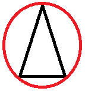

Project #04 - Asteroids
Baseline Requirements
- Play the game Asteroids for a bit if you are not already familiar with the game. Obviously you need to be familiar with the game in order to recreate it.
- At a minimum, you should have a Main class, Ship class, Asteroid Class, and Bullet class.
- Create an ArrayList of Bullet objects and an Arraylist of Asteroid objects in your Main class.
- For each of your classes, follow the MVC framework we've been using all year. In other words, you need to have a calculate method and draw method in each of your classes.
- All instance variables in your classes should be private.
- The up arrow key should control the ship's acceleration, not its velocity. Please make sure to get help on this if you cannot figure it out. If you haven't been in a physics class yet, I might need to provide you with additional explanation beyond what I've provided here.
- To simplify things, make your bullet circles and your asteroids circles (as opposed to jagged polygons with n-sides).
- Your code errors out while running or does not run at all. Or you do not meet one or more of the baseline requirements.
- Bullets should fire in the direction the ship is facing. You can use the center point of your ship and the top of your ship to calculate the slope of that line. You should set the xVel and yVel of the bullet proportionally to the ratio of the rise over run of that line.
- The number of bullets you can shoot at once should be limited and spaced out.
- When a bullet collides with an asteroid, the bullet and asteroid should disappear, and a new asteroid is spawned.
- To accomplish this, you will need to write a method that detects whether two circles are colliding. I'd suggest putting this method,
isCircleInCircle in your main method as a static method (similar to the methods in our animation template for detecting whether points are in rectangles or circles.
- You will need six parameters for this method: the xPos, yPos, and radius for each of the two circles.
- To detect whether two circles are colliding, you need to think about what the distance between the centers of the two circles needs to be in order for the circles to be intersecting. Draw out a diagram of the situation if you get stuck.
- When a bullet collides with a large asteroid, the bullet should disappear, and the large asteroid should break up into two smaller asteroids. I'd suggest having the ability in the Asteroid constructor to specify the radius of the asteroid. Then when the larger asteroid gets destroyed, you can spawn two smaller asteroids. The larger asteroid should get removed from the asteroid ArrayList and the smaller asteroid should get added to the ArrayList
- When you shoot a smaller asteroid, that asteroid completely disappears and is removed from the ArrayList.
- When the ship collides with an asteroid, it should trigger a game over screen. You can approximate the hitbox as a circle around the triangle such that when a circular asteroid collides with the red circle around the ship, that counts as a hit.

- Continue expanding on your game.
- Everything should wrap around, including bullets, asteroids, and the ship. Have a buffer zone to simplify this (in other words, don't try to make it so that part of the ship appears at the bottom of the screen and the other part of it at the top of the screen simultaneously).
- Bullets should have a limited range. In other words, they should disappear once they have traveled a certain distance. I would suggest tracking the total distance a bullet has traveled in an instance variable of the bullet class. If you detect a bullet has traveled over a particular distance, then remove the bullet from the array.
- Implement a scoring system in your game, and display the score as text in your game. New asteroids should spawn at higher rates as your score increases.
- Make jet fuel appear behind your ship whenever you are accelerating your ship.
- Add power-ups
- Have power-ups that occasionally spawn on the screen. When your ship runs over the power-up, that activates the power-up for a limited period of time. You can track the total amount of time elapsed by creating a totalTimeElapsed variable that gets increased by the timeElapsed between each frame. You can use this information to limit the amount of time the power-up is active.
- Ideas for power-ups: